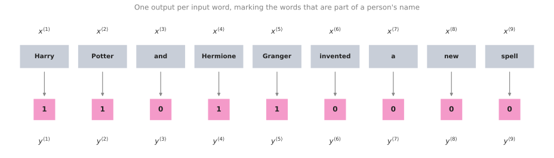
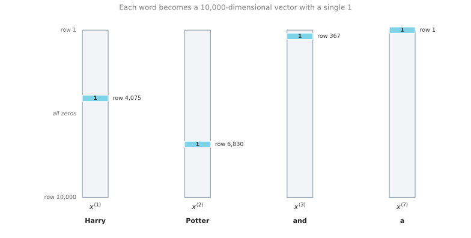

Sequence Models and Notation
deep-learning
sequence-models
rnn
nlp
notation
Where sequence models apply, and the notation for indexing sequence data, building a vocabulary, and turning words into one-hot vectors.
This fifth and final course of the specialization covers sequence models, one of the most exciting areas in deep learning. Models such as recurrent neural networks, or RNNs, have transformed speech recognition, natural language processing, and other areas, and this course builds them up from scratch.
A good place to start is with a few examples of where sequence models are useful.
Sequence Data Examples
In speech recognition you are given an input audio clip \(X\) and asked to map it to a text transcript \(Y\). Both the input and the output here are sequence data, because \(X\) is an audio clip that plays out over time and \(Y\) is a sequence of words. Sequence models such as recurrent neural networks, and the variations covered later, have been very useful for speech recognition.
Music generation is another problem with sequence data. In this case only the output \(Y\) is a sequence. The input can be the empty set, or it can be a single integer, maybe referring to the genre of music you want to generate, or maybe the first few notes of the piece you want. So \(X\) can be nothing or just an integer, while the output \(Y\) is a sequence.
In sentiment classification the input \(X\) is a sequence. Given a phrase such as “There is nothing to like in this movie”, how many stars do you think the review will be?
Sequence models are also very useful for DNA sequence analysis. Your DNA is represented by the four letters A, C, G, and T, and given a DNA sequence you might ask which part of it corresponds to a protein.
In machine translation you are given an input sentence, “Voulez-vous chanter avec moi?”, and asked to output the translation in a different language.
In video activity recognition you might be given a sequence of video frames and asked to recognize the activity taking place.
And in named entity recognition you might be given a sentence and asked to identify the people mentioned in it.
| Application | Input \(X\) | Output \(Y\) |
|---|---|---|
| Speech recognition | Audio clip (sequence) | Text transcript (sequence) |
| Music generation | Nothing, or a single integer | Sequence of notes (sequence) |
| Sentiment classification | Review text (sequence) | Star rating |
| DNA sequence analysis | DNA sequence (sequence) | Labels marking protein regions (sequence) |
| Machine translation | Sentence in one language (sequence) | Sentence in another language (sequence) |
| Video activity recognition | Video frames (sequence) | Activity label |
| Named entity recognition | Sentence (sequence) | Labels marking names (sequence) |
All of these problems can be addressed as supervised learning with labeled data \(X\) and \(Y\) as the training set. But as the list shows, there are a lot of different types of sequence problems. In some of them both the input \(X\) and the output \(Y\) are sequences, and in that case \(X\) and \(Y\) can have different lengths, as in machine translation, or the same length, as in named entity recognition. In others only \(X\) or only \(Y\) is a sequence. Sequence models apply to all of these settings.
Review Questions
1. In music generation, which side of the problem is sequence data, and what can the input be?
TipAnswer
Only the output \(Y\) is a sequence, because the model produces a sequence of notes. The input \(X\) can be the empty set, or a single integer standing for the genre of music you want, or the first few notes of the piece you want.
1. Give an example from the list where \(X\) and \(Y\) are both sequences but do not have to be the same length, and one where they do have the same length.
TipAnswer
Machine translation has both sides as sequences with different lengths, because a sentence and its translation need not contain the same number of words. Named entity recognition has both sides as sequences of the same length, because the model produces one output per input word.
1. Sentiment classification reads “There is nothing to like in this movie” and predicts a star rating. Which of the following describes this problem?
Only the input \(X\) is a sequence
Only the output \(Y\) is a sequence
Both \(X\) and \(Y\) are sequences of the same length
Neither \(X\) nor \(Y\) is a sequence
TipAnswer
a. The input is a phrase, which is sequence data, while the output is a single number of stars. Option b describes music generation, option c describes named entity recognition, and option d would not be a sequence problem at all.
Notation
A good motivating example is named entity recognition. Suppose you want to build a sequence model that takes a sentence such as “Harry Potter and Hermione Granger invented a new spell” and automatically tells you where the people’s names are. Harry Potter and Hermione Granger are characters from the Harry Potter novels by J. K. Rowling.
Named entity recognition is used by search engines, for example, to index all of the people mentioned in the last 24 hours of news articles so that those articles can be looked up appropriately. The same systems are used to find company names, times, locations, country names, and currency names in many different types of text.
Given the input \(x\), you want the model to output a \(y\) that has one output per input word. The target output tells you, for each of the input words, whether it is part of a person’s name.
Technically this may not be the best output representation. There are more sophisticated representations that tell you not just whether a word is part of a person’s name, but where the names start and end, so that you know Harry Potter starts here and ends here, and Hermione Granger starts here and ends here. For this motivating example the simpler output representation is enough.
The input is a sequence of nine words, so there will eventually be nine sets of features to represent those nine words. To index into the positions in the sequence, write \(x^{\langle 1 \rangle}\), \(x^{\langle 2 \rangle}\), \(x^{\langle 3 \rangle}\), and so on up to \(x^{\langle 9 \rangle}\). A position somewhere in the middle of the sequence is written \(x^{\langle t \rangle}\). The letter \(t\) hints that these are temporal sequences, and the same index \(t\) is used whether the sequence is temporal or not. The outputs are indexed the same way, from \(y^{\langle 1 \rangle}\) up to \(y^{\langle 9 \rangle}\).
Two more symbols record how long the sequences are. \(T_x\) denotes the length of the input sequence, so in this case there are nine words and \(T_x = 9\), and \(T_y\) denotes the length of the output sequence. In this example \(T_x = T_y\), but as the previous section showed, \(T_x\) and \(T_y\) can be different.
Earlier courses used \(x^{(i)}\) to denote the \(i\)-th training example. Putting the two pieces together, \(x^{(i)\langle t \rangle}\) refers to element \(t\) in the input sequence of training example \(i\). Different examples in your training set can have different lengths, so \(T_x^{(i)}\) is the input sequence length for training example \(i\). In the same way, \(y^{(i)\langle t \rangle}\) is element \(t\) in the output sequence of example \(i\), and \(T_y^{(i)}\) is the length of that output sequence. For the nine-word sentence above, \(T_x^{(i)} = 9\), while a different training example holding a sentence of fifteen words would have \(T_x^{(i)} = 15\).
| Symbol | Meaning |
|---|---|
| \(x^{\langle t \rangle}\) | Element \(t\) of the input sequence |
| \(y^{\langle t \rangle}\) | Element \(t\) of the output sequence |
| \(T_x\) | Length of the input sequence |
| \(T_y\) | Length of the output sequence |
| \(x^{(i)\langle t \rangle}\) | Element \(t\) of the input sequence of training example \(i\) |
| \(y^{(i)\langle t \rangle}\) | Element \(t\) of the output sequence of training example \(i\) |
| \(T_x^{(i)}\) | Input sequence length of training example \(i\) |
| \(T_y^{(i)}\) | Output sequence length of training example \(i\) |
Review Questions
1. For the sentence “Harry Potter and Hermione Granger invented a new spell”, what are \(T_x\) and \(T_y\), and does that equality hold for every sequence problem?
TipAnswer
The sentence has nine words and the model produces one label per word, so \(T_x = 9\) and \(T_y = 9\). The equality does not hold in general. In machine translation the translated sentence can be longer or shorter than the original, and in sentiment classification the output is a single rating rather than a sequence.
1. What does \(x^{(2)\langle 3 \rangle}\) mean, and how is it different from \(x^{(3)\langle 2 \rangle}\)?
TipAnswer
The round-bracket superscript indexes the training example and the angle-bracket superscript indexes the position inside that example’s sequence. So \(x^{(2)\langle 3 \rangle}\) is the third word of the second training example, while \(x^{(3)\langle 2 \rangle}\) is the second word of the third training example. They point at different words in different sentences.
1. Why does the notation need \(T_x^{(i)}\) rather than a single \(T_x\) for the whole training set?
TipAnswer
Because different training examples can have different lengths. One sentence in the training set may hold nine words and another may hold fifteen, so the length has to be recorded per example.
Representing Words
This is the first serious step into natural language processing, so the next question is how to represent an individual word in a sentence.
To represent a word, the first thing to do is come up with a vocabulary, sometimes also called a dictionary. That means making a list of the words that you will use in your representations. The first word in the vocabulary is a, the second is Aaron, a little further down is the word and, then eventually Harry, then Potter, and all the way down to maybe the last word Zulu.
| Position | Word |
|---|---|
| 1 | a |
| 2 | Aaron |
| … | … |
| 367 | and |
| … | … |
| 4,075 | Harry |
| … | … |
| 6,830 | Potter |
| … | … |
| 10,000 | Zulu |
So a is word one, Aaron is word two, and sits at position 367, Harry at 4,075, Potter at 6,830, and Zulu is the last word at 10,000. This example uses a dictionary of size 10,000 words, which is quite small by modern NLP standards. For commercial applications, dictionary sizes of 30,000 to 50,000 are more common and 100,000 is not uncommon, while some of the large internet companies use dictionary sizes of a million words or even bigger. A round 10,000 is convenient for illustration.
One way to build this dictionary is to look through your training set and find the top 10,000 occurring words. Another is to look through online dictionaries that tell you the most common 10,000 words in the English language.
Once the dictionary exists, you can use one-hot representations to represent each of these words. For example, \(x^{\langle 1 \rangle}\), which represents the word Harry, is a vector of all zeros except for a 1 in position 4,075, because that is the position of Harry in the dictionary. Then \(x^{\langle 2 \rangle}\) is again a vector of all zeros except for a 1 in position 6,830 for Potter. The word and sits at position 367, so \(x^{\langle 3 \rangle}\) is a vector with a 1 in position 367 and zeros everywhere else. The seventh word of the sentence is a, which is the very first entry of the dictionary, so \(x^{\langle 7 \rangle}\) has a 1 in position 1 and zeros everywhere else. Each of these is a 10,000-dimensional vector, because the vocabulary has 10,000 words.

In this representation, \(x^{\langle t \rangle}\) for each value of \(t\) in a sentence is a one-hot vector. It is called one-hot because exactly one entry is on and every other entry is zero, and there are nine of them to represent the nine words in this sentence. The goal is to take this representation of \(X\) and learn a mapping, using a sequence model, to the target output \(y\). This is done as a supervised learning problem, trained on labeled data with both \(x\) and \(y\) given.
Unknown Words
One last detail, which comes back in a later video, is what happens when you encounter a word that is not in your vocabulary. The answer is that you create a new token, a new fake word called Unknown Word, written \(\langle \text{UNK} \rangle\), to stand for every word that is not in your vocabulary.
Review Questions
1. The sentence is “Harry Potter and Hermione Granger invented a new spell” and the vocabulary has 10,000 words. What does \(x^{\langle 7 \rangle}\) look like?
TipAnswer
The seventh word is a, which is the first entry in the dictionary. So \(x^{\langle 7 \rangle}\) is a 10,000-dimensional vector holding a 1 in position 1 and a 0 in every other position.
1. Two ways of building a 10,000-word vocabulary were mentioned. What are they?
TipAnswer
You can look through your own training set and take the 10,000 most frequently occurring words, or you can look through an online dictionary that lists the most common 10,000 words in the English language.
1. A word appears in a test sentence but was never added to the vocabulary. How is it represented?
It is dropped from the sentence
It is mapped to the special token \(\langle \text{UNK} \rangle\)
It is given a vector of all zeros
The vocabulary is grown by one entry
TipAnswer
b. A new fake word called Unknown Word, written \(\langle \text{UNK} \rangle\), stands in for every word that is not in the vocabulary. Dropping the word would change the length of the sequence, an all-zero vector would not be a one-hot vector, and growing the vocabulary would change the dimension of every input vector.
1. Why is a one-hot vector for this example 10,000 numbers long rather than nine?
TipAnswer
The length of a one-hot vector is set by the size of the vocabulary, not by the length of the sentence. The vocabulary holds 10,000 words, so each vector needs 10,000 slots in order to mark which one of those words it is. The sentence length of nine only decides how many such vectors you need, which is one per word.
With this notation in place, the next step is to build a recurrent neural network that learns the mapping from \(X\) to \(Y\).